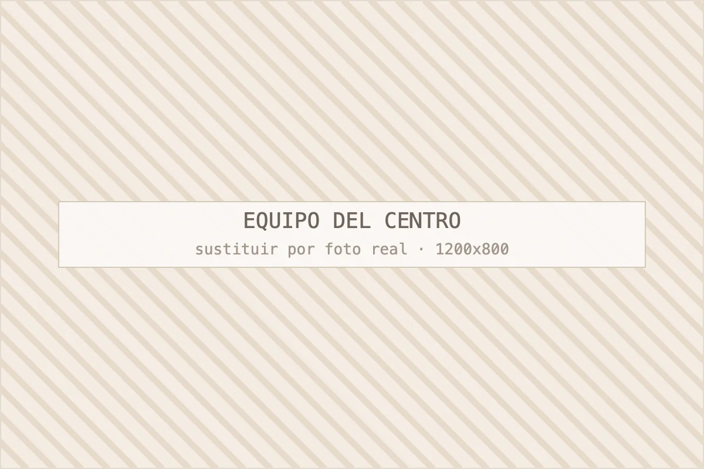
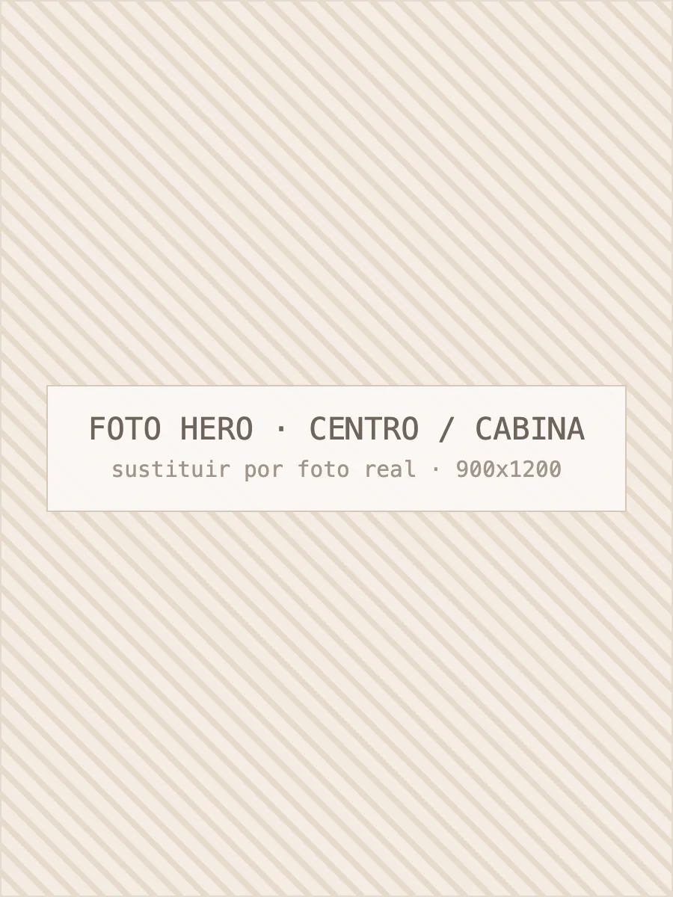
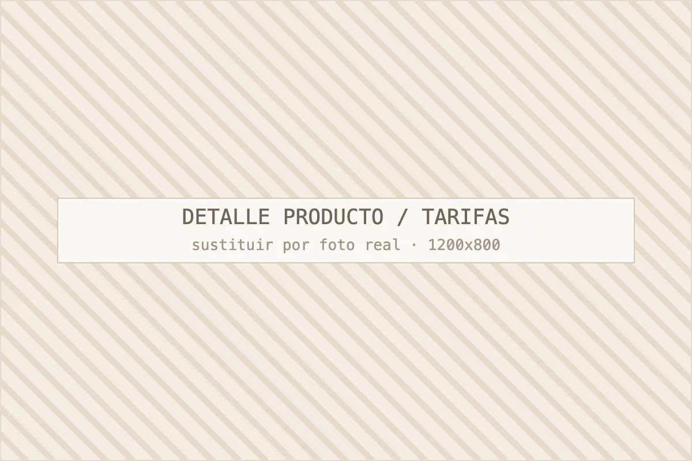
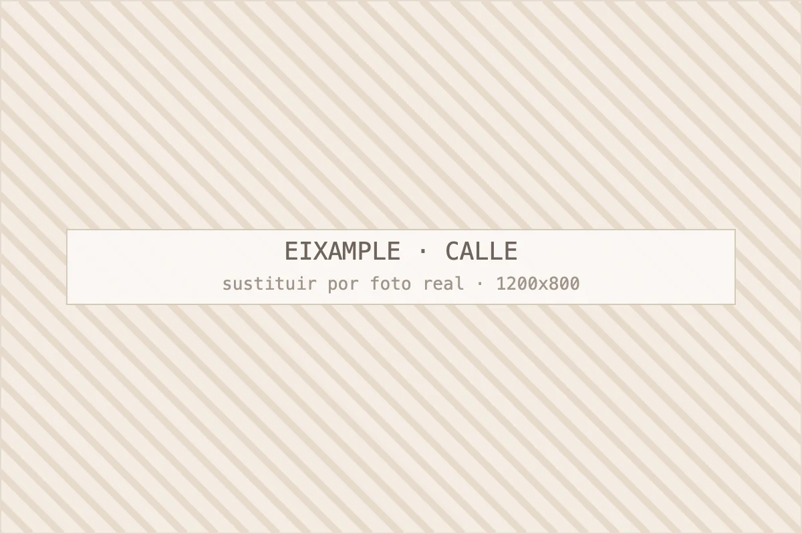
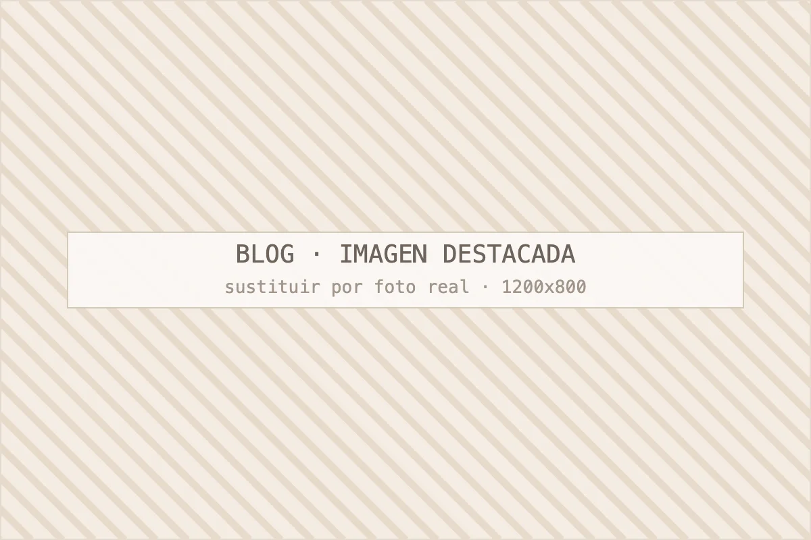
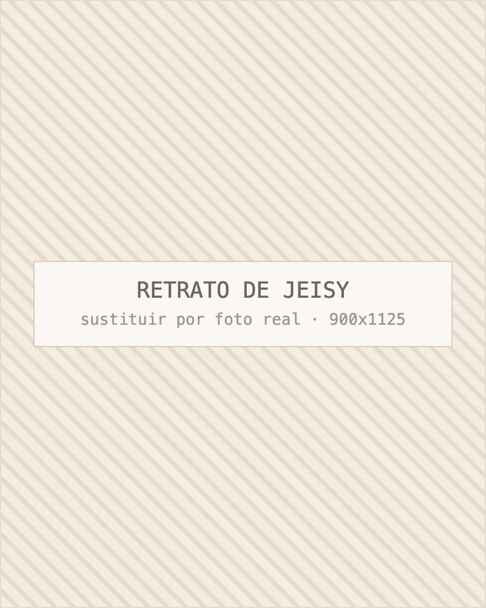

Quién te va a tratar
Jeisy dirige el centro y las cabinas. Trayectoria, formación y forma de trabajar.
Conocer al equipo del centroCentro de estética · Eixample, Barcelona
Maderoterapia, remodelación corporal, tratamientos faciales, micropigmentación de cejas y masajes. Valoración previa gratuita y un protocolo cerrado antes de la primera sesión.
En Centro Estética Barcelona ofrecemos tratamientos de estética corporal y facial en Barcelona desde hace más de diez años. Somos un centro de estética situado en Gran Via de les Corts Catalanes, 556, Principal 2, en el barrio del Eixample (08015 Barcelona), especializado en maderoterapia, remodelación corporal, tratamientos faciales, micropigmentación de cejas y masajes terapéuticos. Nos conocen por trabajar con protocolos cerrados y valoración previa gratuita: más de 3.000 clientas han pasado por nuestras cabinas y mantenemos una valoración media de 4,7 sobre 5 en Google.

01 — Servicios
Ordenados por lo que más nos piden. Cada tratamiento tiene su propia página con protocolo, número de sesiones habitual, contraindicaciones y precio orientativo.
Masaje con instrumentos de madera para movilizar grasa localizada y retención de líquidos. Ciclos de 10 a 12 sesiones con medición de contorno. Desde 35 € la sesión.
Ver tratamientoProtocolos reductores, reafirmantes y anticelulíticos que combinan maderoterapia, presoterapia, drenaje linfático y aparatología. Entre 40 € y 75 € por sesión.
Ver tratamientoLimpieza profunda con extracción, hidratación con ácido hialurónico, luminosidad con vitamina C y protocolos de firmeza. Diagnóstico con lámpara incluido. Desde 45 €.
Ver tratamientoTécnica pelo a pelo y sombreado según tu piel. Diseño previo, pigmentos con ficha técnica, material de un solo uso y retoque incluido. Desde 220 €.
Ver tratamientoRelajante, descontracturante, circulatorio y drenaje linfático manual. Sesiones de 30, 60 y 90 minutos. Desde 35 €.
Ver tratamiento02 — El centro
Somos un centro pequeño con nombre y cara. Aquí tienes lo que la mayoría de clientas consulta antes de pedir la primera cita.

Jeisy dirige el centro y las cabinas. Trayectoria, formación y forma de trabajar.
Conocer al equipo del centro
Tarifas orientativas por tratamiento, bonos y qué incluye cada sesión.
Ver tarifas de estética en Barcelona
Eixample, Sants-Montjuïc, Les Corts y alrededores de Plaça d'Espanya.
Ver zonas de servicio
Artículos sobre tratamientos, cuidados en casa y errores frecuentes.
Leer el blog de estética03 — Cómo trabajamos
Ninguna es espectacular por separado. Juntas explican por qué la mayoría de nuestras clientas llega recomendada por otra.
Medimos, fotografiamos si lo autorizas y te entregamos el plan con número de sesiones y precio. Si no vas a notar resultados, te lo decimos ahí.
Cintura, cadera y muslo con cinta, siempre en el mismo punto. El resultado se ve en la ficha, no en una impresión.
No solapamos citas ni dejamos a nadie con la máquina puesta. Por eso trabajamos con cita previa cerrada.
Trabajamos con marcas de cabina y podemos enseñarte la composición de lo que te aplicamos. Nada de producto sin etiqueta.
Bonos de 5 y 10 sesiones con descuento real, sin letra pequeña ni caducidades de dos meses.
Cada año reservamos presupuesto para formación en técnica manual y aparatología. Lo que aprendemos entra en cabina, no en un folleto.

04 — Quién está detrás
Llegué a Barcelona desde Colombia con la técnica manual muy trabajada y una idea fija: la estética corporal se sostiene en las manos, no en la máquina. Después de años trabajando en centros de otros, monté esta cabina en Gran Via para poder hacer las cosas a mi manera: pocas clientas al día, tiempo real por sesión y decir la verdad aunque cueste una venta.
Lo que más nos preguntan es si de verdad se nota. Mi respuesta siempre es la misma: te mido el primer día y te vuelvo a medir en la quinta sesión. Si los centímetros no bajan, cambiamos el protocolo o te devuelvo las sesiones. Llevo más de diez años haciéndolo así y es la razón por la que la mitad de la agenda son clientas que vuelven cada temporada.
05 — Guía práctica
Las preguntas que nos hacen en la primera visita, respondidas como se las contamos en cabina.
La maderoterapia es un masaje corporal profundo que se realiza con instrumentos de madera diseñados para cada zona del cuerpo. Su efecto viene de dos cosas: la presión mecánica sostenida, que moviliza la grasa localizada y rompe la retención en el tejido, y el drenaje posterior, que evacúa por vía linfática lo que se ha movilizado.
En la práctica no es un tratamiento mágico ni una alternativa a la cirugía. Funciona muy bien en abdomen bajo, flancos, cara interna del muslo y glúteo, y funciona regular cuando lo que hay es flacidez cutánea marcada; ahí sumamos radiofrecuencia o directamente lo decimos. Por experiencia, la clienta que combina las sesiones con caminar veinte minutos al día y beber agua de verdad obtiene el doble de resultado que la que espera que el rodillo lo haga todo.
Puedes ver el protocolo completo, las contraindicaciones y las fotos del proceso en la página de maderoterapia corporal en Barcelona.
Con dos sesiones se nota la piel más lisa y menos hinchada; para un cambio de contorno medible hay que llegar a la sexta. Ese es el patrón que vemos en la ficha de casi todas las clientas de tratamiento corporal.
Distribuimos el ciclo así: dos sesiones semanales durante las tres primeras semanas, para forzar el cambio, y luego una semanal hasta cerrar diez o doce. Después, mantenimiento de una sesión al mes si quieres conservarlo. En facial la lógica es distinta: una limpieza profunda cada seis u ocho semanas y protocolos de cuatro sesiones para luminosidad o firmeza.
Lo cierto es que abandonar a la cuarta sesión es el error más caro. Nos ha pasado decenas de veces: clientas que se van justo antes del punto en el que el tejido empieza a ceder, y que vuelven meses después a empezar de cero. Si no puedes sostener el ritmo, mejor hablamos y ajustamos el plan a lo que sí vas a poder cumplir.
En nuestro centro los tratamientos corporales parten de 35 € por sesión, los faciales de 45 € y la micropigmentación de cejas de 220 € con el retoque incluido. Los bonos de 10 sesiones reducen el precio por sesión entre un 15 % y un 25 %.
Son rangos, y lo son por un motivo honesto: tratar un abdomen no cuesta lo mismo que tratar piernas completas y glúteos, y una piel con acné activo necesita más sesiones que una piel apagada. El precio cerrado sale de la valoración gratuita, con el plan delante. El desglose por tratamiento está en la página de tarifas orientativas del centro.
Resumen rápido: si tu problema es grasa localizada y celulitis, empieza por maderoterapia; si es piernas hinchadas y sensación de pesadez, la presoterapia te va a aliviar antes. En la mayoría de casos lo correcto es combinarlas en la misma sesión, en ese orden.
| Criterio | Maderoterapia | Presoterapia |
|---|---|---|
| Qué resuelve | Grasa localizada, celulitis, tejido duro | Retención de líquidos, piernas cansadas, drenaje |
| Sensación | Masaje intenso, presión firme | Compresión rítmica, cómoda, casi relajante |
| Precio orientativo | Desde 35 € la sesión | Desde 25 € añadida a otro tratamiento |
| Sesiones para notarlo | 6 para contorno medible | 1–2 para la sensación de ligereza |
| Cuándo la elegimos | Objetivo de remodelación y contorno | Objetivo de descongestión y postoperatorio estético |
Nuestra recomendación, después de años haciendo las dos: maderoterapia para mover y presoterapia para evacuar. Hacer solo presoterapia esperando perder centímetros lleva a la decepción, y hacer solo maderoterapia en una pierna muy retenida es incómodo y menos eficaz. Lo decidimos en la valoración, mirando el tejido.
Con un diagnóstico de piel antes de tocar nada: tipo de piel, nivel de deshidratación, poro, marcas y rutina que ya usas en casa. De ahí sale el protocolo, no de un menú de tratamientos.
Hay tres caminos que cubren casi todo lo que entra por la puerta. Pieles con brotes y poro dilatado: limpieza profunda con extracción manual, activos seborreguladores y pauta domiciliaria simple. Pieles apagadas y deshidratadas: hidratación con ácido hialurónico y vitamina C, en tandas de cuatro sesiones. Pieles maduras con pérdida de firmeza: radiofrecuencia y peelings suaves progresivos, siempre respetando la barrera cutánea.
Una cosa que decimos mucho: la cabina hace el 40 % del trabajo y tu casa el 60 %. Si no vas a usar protector solar a diario, ningún protocolo de luminosidad va a sostenerse. Los detalles de cada opción están en tratamientos faciales en Barcelona.
Sí, si se hace con material estéril de un solo uso, pigmentos con ficha técnica y una valoración previa de la piel. Es un procedimiento semipermanente que implanta pigmento en la capa superficial, con un resultado que dura entre 12 y 18 meses.
Antes de empezar diseñamos la ceja con lápiz y no seguimos hasta que estás de acuerdo con la forma; es la parte más importante de toda la sesión. Después hay una fase de costra fina y aclarado durante diez días que asusta a mucha gente y es completamente normal. El retoque a las cuatro o seis semanas está incluido en el precio porque es donde se cierra el color definitivo.
No trabajamos sobre piel con dermatitis activa, cicatrices recientes o queloides en la zona, ni en embarazo. En pieles muy grasas avisamos de que el trazo pelo a pelo se difumina antes y solemos recomendar sombreado. Todo el proceso está explicado en micropigmentación de cejas en Barcelona.
Dura entre 20 y 30 minutos, es gratuita y no incluye tratamiento. Es una consulta: hablamos, miramos y salimos con un plan escrito.
El orden es siempre el mismo: nos cuentas qué te molesta y qué has probado antes, revisamos antecedentes médicos y medicación, valoramos la zona o la piel, tomamos medidas si es corporal y te proponemos protocolo, número de sesiones, precio y calendario. Si hay algo que no es de cabina, te lo decimos y te orientamos a quien corresponda.
Puedes reservar esa valoración por WhatsApp o llamando al 692 601 791. También tienes el mapa, el horario y cómo llegar en la página de contacto y cita.
07 — Preguntas frecuentes
Doce preguntas reales de clientas del Eixample, con respuestas concretas. Si te falta alguna, escríbenos por WhatsApp y la añadimos.
La mayoría de clientas nota la piel más lisa y menos hinchada desde la primera o segunda sesión, pero un cambio medible de contorno aparece a partir de la sexta. Trabajamos con ciclos de 10 a 12 sesiones, a razón de dos por semana las tres primeras semanas y una por semana después. Al empezar te medimos cintura, cadera y muslo y repetimos la medición en la sesión 5 y en la 10, así que el resultado no se discute: está apuntado en tu ficha.
En nuestro centro una sesión suelta de maderoterapia parte de 35 € y los protocolos corporales combinados se mueven entre 40 € y 75 € por sesión, según la zona y las técnicas que se sumen. Los bonos de 10 sesiones bajan el precio por sesión entre un 15 % y un 25 %. Son precios orientativos: el importe exacto sale de la valoración gratuita, porque tratar abdomen no cuesta lo mismo que tratar piernas completas y glúteos.
No debería doler: es un masaje profundo, firme, que se nota sobre todo en zonas con retención de líquidos o celulitis dura. Puede aparecer una molestia parecida a la de una sesión de gimnasio y, en pieles sensibles, algún morado leve en los primeros días. Regulamos la presión durante la sesión y te pedimos que nos digas si pasas de siete en una escala de diez, porque más presión no significa más resultado.
Depende de tres cosas: tu tipo de piel, el problema que quieres corregir y el tiempo que puedes dedicarle. Las pieles mixtas y con brotes responden bien a limpiezas profundas con extracción y activos seborreguladores; las pieles secas o apagadas mejoran con hidratación con ácido hialurónico y vitamina C; las pieles maduras necesitan protocolos de firmeza con radiofrecuencia o peelings suaves progresivos. En la primera visita hacemos un diagnóstico con lámpara y te proponemos un plan, no una lista de tratamientos sueltos.
No, es semipermanente: el pigmento se deposita en la capa superficial de la piel y el resultado dura entre 12 y 18 meses. Después se difumina de forma progresiva, sin dejar bordes duros. El precio incluye el retoque a las cuatro o seis semanas, que es la sesión donde realmente se cierra el diseño. Usamos pigmentos con ficha técnica y material estéril de un solo uso, y firmamos consentimiento informado antes de empezar.
Sí, y en corporal casi siempre lo hacemos. La combinación más pedida es maderoterapia seguida de presoterapia o drenaje linfático: la primera moviliza y la segunda evacúa, y así se aprovecha mejor la hora de cabina. En facial también funciona bien cerrar una limpieza profunda con un masaje relajante de cuello y hombros. Lo que no combinamos el mismo día son técnicas agresivas sobre la misma zona.
Necesitas cita previa. Trabajamos con una sola clienta por cabina y por franja, así que sin reserva es probable que no podamos atenderte. Puedes pedir cita por WhatsApp en el 692 601 791, por teléfono o por correo. Si nos escribes por la mañana, lo normal es que ese mismo día tengamos hueco por la tarde; para sábados conviene reservar con dos o tres días de antelación.
Sirven para mejorarla de forma visible, no para hacerla desaparecer para siempre. La celulitis tiene un componente estructural que no se elimina con masaje, pero sí se puede reducir mucho la retención de líquidos, el aspecto de piel de naranja y la dureza del tejido. Con un ciclo de 10 sesiones combinando maderoterapia y drenaje, lo habitual es pasar de un grado 3 a un grado 2 en la escala clínica; mantenerlo depende de una sesión al mes y de tu alimentación.
Estamos en Gran Via de les Corts Catalanes, 556, Principal 2, 08015 Barcelona, en el tramo del Eixample cercano a Plaça d'Espanya. Las paradas de metro más cómodas son Rocafort (L1) y Espanya (L1, L3, L8), ambas a menos de siete minutos andando, y paran cerca las líneas de bus que suben por Gran Via. Si vienes en coche, hay aparcamiento de rotación en Tarragona y en el entorno de Plaça d'Espanya.
Sí. Los bonos de 5 y 10 sesiones son la forma habitual de contratar los tratamientos corporales y salen entre un 15 % y un 25 % más baratos que la sesión suelta. También preparamos packs combinados (por ejemplo corporal más facial de mantenimiento) y bonos regalo. No hacemos ofertas agresivas de temporada: preferimos un precio estable y un bono que puedas usar sin caducidades absurdas.
Te lo decimos antes de que lo contrates. En la valoración gratuita te damos una previsión realista y, si tu caso no es de cabina —por ejemplo una flacidez que solo mejora con cirugía o una alteración que debe ver un dermatólogo—, te lo explicamos y no te vendemos sesiones. Si a mitad de ciclo las mediciones no acompañan, cambiamos el protocolo o reconvertimos las sesiones restantes en otro tratamiento.
Con embarazo no hacemos maderoterapia, presoterapia ni radiofrecuencia; sí podemos ofrecer masaje de piernas suave con autorización de tu ginecólogo y tratamientos faciales sin activos contraindicados. Con varices marcadas evitamos trabajar directamente sobre el trayecto de la vena y adaptamos la técnica. Siempre preguntamos por antecedentes médicos, medicación y cirugías recientes antes de la primera sesión.
08 — Zonas de servicio
Estamos en Gran Via con Rocafort, a siete minutos de Plaça d'Espanya. La mayoría de clientas llega andando desde el Eixample o en metro desde Sants y Les Corts.
Pedir cita
Cuéntanos qué te preocupa y te decimos con franqueza qué tratamiento tiene sentido en tu caso, cuántas sesiones necesitarías y cuánto costaría. Si creemos que no vas a notar resultados, te lo diremos.
Última actualización: · Contenido revisado por Jeisy, responsable de Centro Estética Barcelona.